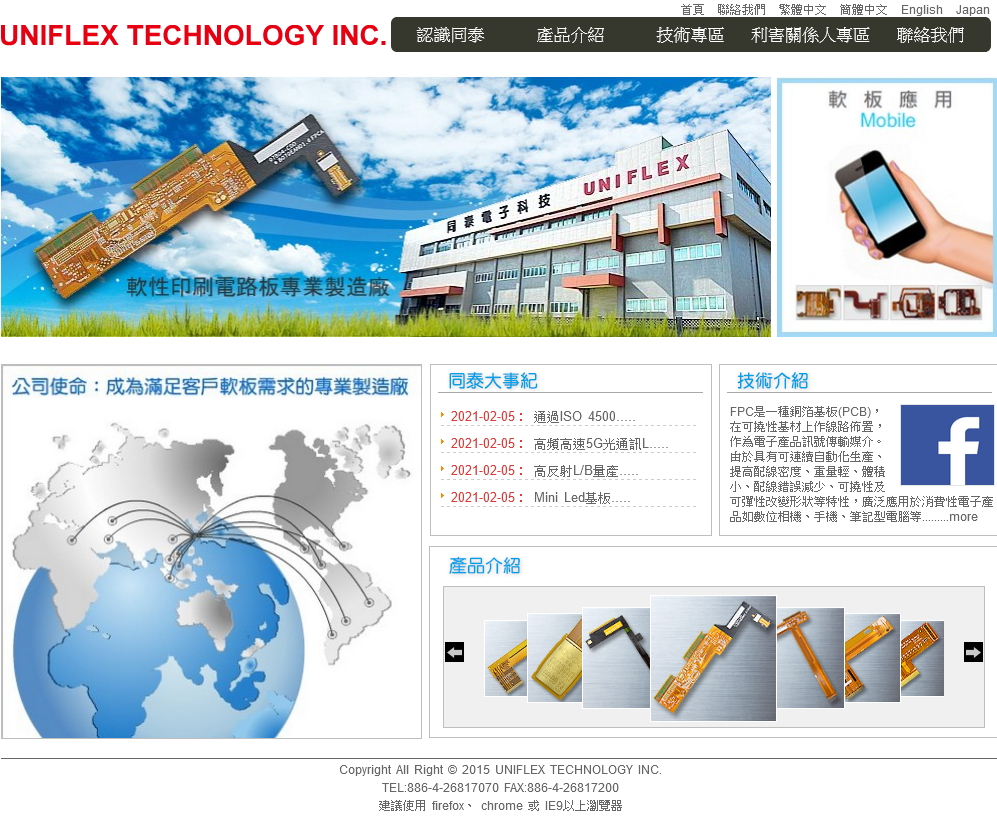
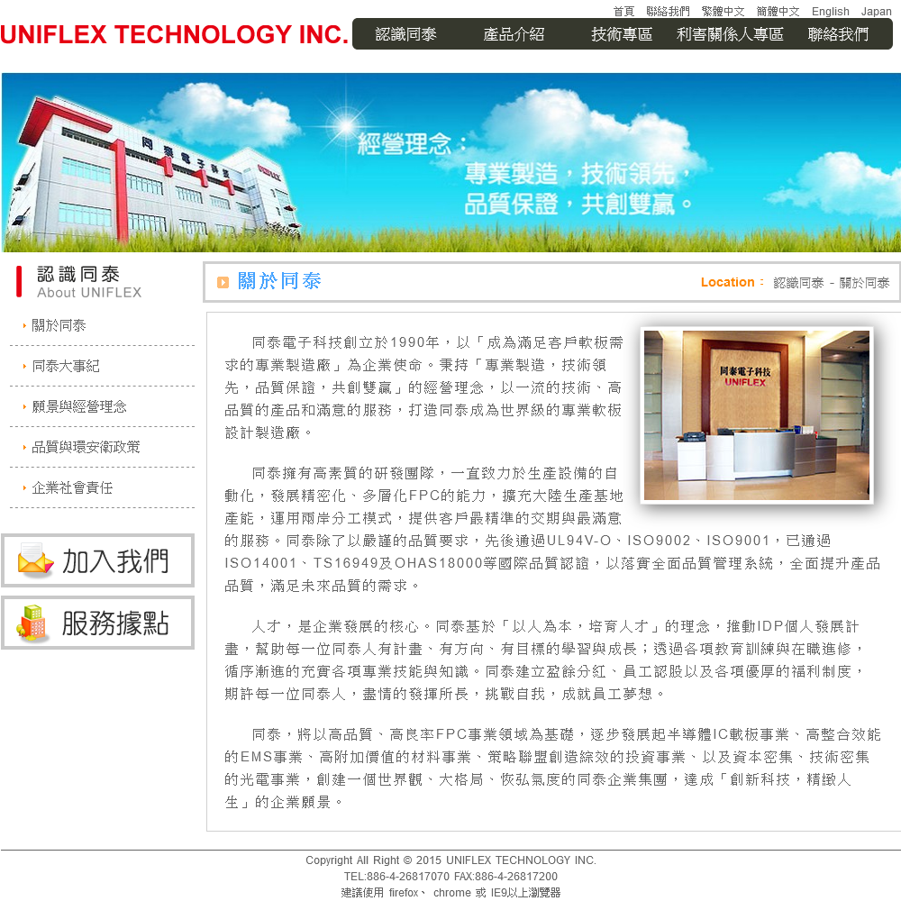

這是我轉職後的第二個PHP專案，企業形象網站建置，擔任兩個角色，網頁開發（前後端）角色+美工設計角色。 要從網管工程師轉到軟體工程師其實是一項大挑戰，也需要一個機會，會來了就要把握住。
那一陣子想換工作都在104人力銀行閒逛，發現同泰電子的軟體設計工程師職缺應徵人數接近於0，又刊登了一陣子，主要工作內容是官網改版，需要同時會美工與寫程式技能的工程師， 機會來了，來挑戰看看，終於拿到offer，從網路管理工師跨到軟體工師。
我就從原型設計開始吧，前端版型設計了兩個版型，後端版型比較固定，設定好版型大小內容，與版型上的標題，字體，段落文字，顏色，就往下階段， 原型設計好之後就蒐集素材，有些圖片要請同事幫忙拍照，有些圖片上網蒐集，蒐集好的素材，有些要修圖（去背，調整飽和度..），修好圖，做簡單平面設計與Flash動畫。 先做一版靜態的網站給主管看看，如果ok就開始寫啦。
OK了，先從網站後台開發，選擇使用CodeIgniter開發，自學，學習曲線很短，很好上手。第一次使用PHP框架的MVC架構，是分層的，不像之前寫PHP都是包在一起。 接下來是網站的資料庫規劃，從原型設計裡，整理出資料表，設計好了，那開始coding。 後台好了之後，輪到網站前台開發，依照原型設計的片版型，使用DIV+CSS開始切版。
網站首頁

網站內頁
